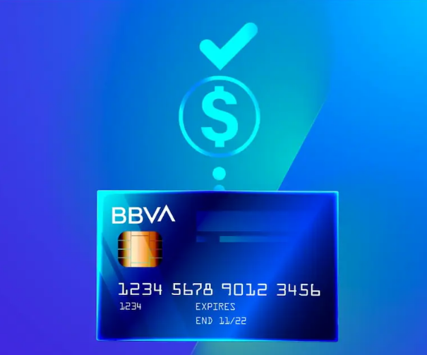
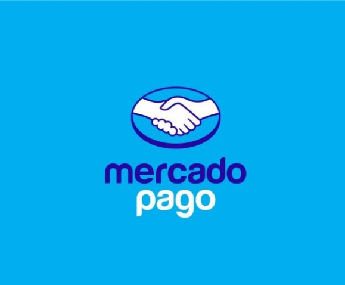

PEDIDOS
Cuento con algunos productos en stock para entrega inmediata. También podés hacer pedidos con 24 a 48 horas de anticipación. Consultame por disponibilidad.
Qué Rico — Panadería y Pastelería Artesanal

Soy Yanina, mi emprendimiento se llama Qué Rico y tiene como misión hacer más dulce la vida de las personas. Los encuentros en familia, con amigos y fechas especiales son mi fortaleza, mi inspiración. Mi objetivo es que disfruten de comer muy buenos productos, cocinados con ingredientes de calidad, sin conservantes. Los invito a descubrirlos y espero que les guste.
Ver productosCuento con algunos productos en stock para entrega inmediata. También podés hacer pedidos con 24 a 48 horas de anticipación. Consultame por disponibilidad.
Para confirmar tu pedido, se solicita una entrega o seña.
No cuento con un local de atención al público; elaboro los productos en mi domicilio. Coordinamos con anticipación el día y el horario de entrega.
Limón, limón con amapolas, naranja, mandarina, banana, banana con chips de chocolate o nueces, chocolate, chocolate con cerezas y nueces, Oreo, dulce de leche, carrot cake, inglés, peras,membrillo, frutos secos, dulce de leche, remolacha, vainilla con chips de chocolate, arándanos, nuez, marmolado, frutos rojos.
VER CATÁLOGOAlfajores de Maicena, Mini alfajores de maicena, Alfajores de Dulce de Leche, Mini alfajores de dulce de leche. Alfajores Bañados en chocolate negro o blanco, Mini alfajores Bañados en chocolate negro o blanco.
Ver CatálogoBizcochuelos, selva negra, chajá, torta invertida de manzana o pera, tortas personalizadas, torta matera con crema pastelera. También, tarta de frutillas, cheesecake frutos rojos, tarta de peras, lemon pie.
Ver CatálogoPancitos saborizados, variedad de masitas, pan dulce de membrillo, de arándanos, pan dulce con chips de chocolate, pan dulce relleno con crema, pan dulce especial, cake cake, bandejas materas.
Ver CatálogoPastafrola de dulce de membrillo, batata o dulce de leche. Diferentes presentaciones y tamaños. Redonda, rectangular.
Ver CatálogoPresentación en Cajas Especiales para la ocasión (Día del Amigo, de la Madre, Navidad) pueden ser con variedad de masitas, alfajores o bombones.
Ver CatálogoConsultá por promociones y descuentos.
Consultá el alias y las promociones disponibles.

Consultá las promociones disponibles.
